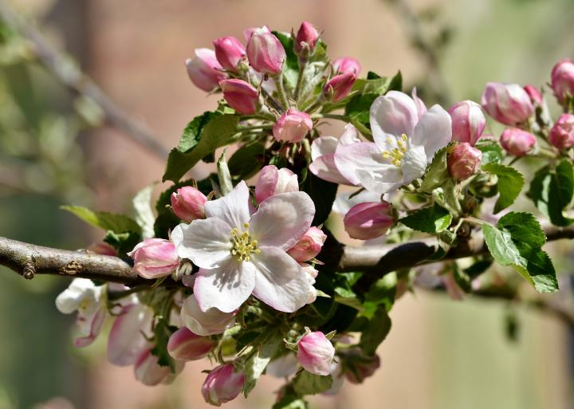

Apples trees aren’t just for people with acres upon acres of land. Even in a small space, you can plant a hedge of dwarf apple trees or an apple espalier and yield a successful crop. Spring planting is recommended in central and northern areas. Fall planting can also be successful but only in areas where autumn and winter weather is generally more mild and moist.
Where Do Apples Grow?
However, climate considerations are very important for growing apples. As a general rule, if an apple tree is called “hardy,” it grows best in USDA Hardiness Zones 3 to 5. If termed “long-season,” apple quality will be best in Zones 5 to 8.
Each variety has a number of chill hours needed to set fruit (i.e., the amount of time temperatures are between 32 and 45 degrees F). The farther north you go, the more chill hours an apple variety needs to avoid late spring freeze problems. Check tree tags for chill hour information or ask the seller.
Can You Grow Apple Trees From Seed?
A common question is whether it’s possible to simply plant the seed of a variety that you like rather than buy a young tree. While it’s certainly possible to grow an apple tree from a seed, the apple tree you get probably won’t be the kind you hoped for!
Apple seeds are genetically different from their parent tree, which means that things like tree size, hardiness, and fruit quality will differ (and will usually be poorer). So, if you plant a Honeycrisp seed, you won’t end up with Honeycrisp apples. Plus, it can take 8-10 years for an apple seedling to grow big enough to produce apples, so you may end up waiting awhile!
Nevertheless, growing an apple seedling can still be a fun experiment.
Here’s how to plant apple seeds
Apple seeds need to be exposed to cool, moist conditions before they are ready to germinate and grow. Sow them outdoors 1/2 inch deep in the fall and the natural seasonal cycle will take care of the seed’s chilling needs for you. Alternatively, place the seeds in moistened sand in a plastic container and keep the container in the fridge for 3 to 4 months. Then, sow them outdoors 1/2 inch deep once the threat of frost has passed. Once the seedling emerges, be sure to keep it well watered and protected from pests.
Apple Trees Need Friends
Most apples need pollen from another apple tree to produce fruit. This is called cross-pollination. This second tree must be a different cultivar but also one that will flower at the same time. The presence of bees will be very important; poor pollination can reduce the number of fruit and cause misshapen fruit; some orchards rent or maintain bee hives for good pollination. Overusing broad-spectrium insecticides can reduce the number of bees.

planting
When to Plant Apple Trees
Bare-root apple trees should be planted in the early spring as soon as the soil can be worked.
Container-grown apple trees can be planted throughout the growing season as long as they are given enough water.
Selecting a Site
As with most fruit, apple trees produce best when grown in full sun, which means six or more hours of direct summer sunlight daily.
Apple trees need well-drained soil, but should be able to retain some moisture. Light- to medium-texured soils are best. Fruit trees struggle in heavy clay soil; poorly drained soils leads to root rot disease.
Plant fruit in a location with good air circulation so leaves dry quickly after a rainfall or irrigation (or the tree risks fungal leaf diseases).
Make sure the tree will not be planted in a “frost pocket” where cold air settles in low-lying areas. Choose a higher site with a slip if possible so that cold air will flow away from the trees.
Do not plant trees near wooded areas or other trees.
The ideal soil pH is 6.0 to 6.5 but a pH range of 5.5 to 7.0 is acceptable. Take a soil test prior to planting your apple trees.
Planting the Tree
Before planting, remove all weeds and the grass in a 4-foot diameter circle.
After you purchase the tree, protect it from injury, drying out, freezing, or overheating. If the roots have dried out, soak them in water about 24 hours before planting.
Tree spacing is influenced by the rootstock, soil fertility, and pruning. Seedlings or full-size trees should be planted about 15 to 18 feet apart in a row. A dwarfing rootstock might be 4 to 8 feet apart in a row. Of course, apple trees require cross-pollination; a different cultivar that blooms at the same time must be planted within 2,000 feet (preferably, nearer).
Dig a hole approximately twice the diameter of the root system and 2 feet deep. Place some of the loose soil back into the hole and loosen the soil on the walls of the planting hole so the roots can easily penetrate the soil. Spread the tree roots on the loose soil, making sure they are not twisted or crowded in the hole. Continue to replace soil around the roots. As you begin to cover the roots, firm the soil to be sure it surrounds the roots and to remove air pockets.
Do not add fertilizer at planting time, as the roots can be “burned”. Fill the remainder of the hole with the loose soil, and press the soil down well.
Most apple trees are grafted. The graft union should be at least 4 inches above the soil line so that roots do not emerge from the scion. The graft union (where the scion is attached to the rootstock) can be recognized by the swelling at the junction.
Dwarf apple trees are notoriously prone to uprooting under the weight of a heavy crop, so you should provide a support system for your hedge. You can grow your trees against a fence, or you can provide free-standing support in the form of a trellis.
growing
Water young trees regularly, especially those on semidwarfing or dwarfing rootstocks, to ensure that the root system becomes well established.
Refresh mulch periodically, but pull it away from the trunk so that it doesn’t rot. This also helps to prevent rodents from nesting in it over the winter and chewing on the tree’s bark.
Apple trees require initial training to nurture a strong frame of branches so the trees can carry heavy apple crops. Dwarf plants must be supported with posts or trellis and trained to a central leader system. Standard (and sem-dwarf) trees should also be trained to a modified leader.
Pest control measures will be an important part of care. Correct timing is critical to avoid harming the bees and affecting pollination. When used, pesticides are applied at a specific stage of flower and fruit development, not according to the calendar. It’s important to research your variety and climate to know which pests are most likely to be a problem, which will allow you to apply the right controls at the right time.
If you wish to avoid pesticides, it is possible, though apple trees are the one of the most pest-susceptible fruits. For example, you can place paper bags around each apple of your tree, though this takes some time and labor. There are also organic pesticides.
Pruning Apple Trees
Pruning slows a young tree’s overall growth and can delay fruiting, so don’t be in a hurry to prune, other than removing misplaced, broken, or dead branches. There are several techniques to direct growth without heavy pruning. For example:
Rub off misplaced buds before they grow into misplaced branches.
Bend a stem down almost horizontally for a few weeks to slow growth and promote branches and fruiting. Tie down with strings to stakes in the ground or to lower branches.
Prune yearly to maintain size and form once your apple tree has filled in and is bearing fruit. Pruning reduces disease by letting in more light and air. Large trees may need more pruning (and a ladder!).
Prune your mature tree when it is dormant. Completely cut away overly vigorous, upright stems (most common high up in the tree).
Remove weak twigs which often hang from the undersides of limbs.
Shorten stems that become too droopy, especially those low in the tree.
After about ten years, fruiting spurs (stubby branches that elongate only about a half-inch per year) become overcrowded and decrepit. Cut away some of them and shorten others.
When a whole limb of fruiting spurs declines with age, cut it back to make room for a younger replacement.
Thinning Apples
Apples are often grown without any thinning other than what nature provides in the annual spring drop.
However, to avoid potential disease and insect problems, it’s helpful to thin after the natural fruit drop (about 4 to 6 weeks after bloom) to one fruit per cluster, or about 6 to 8 inches between fruit.
This seems hard but this practice evens out production, prevents a heavy crop from breaking limbs, and ensures better-tasting, larger fruit crop.
Soon after fruit-set, remove the smallest fruits or damaged ones, leaving about four inches between those that remain.
recommended varieties
Choose the Right Varieties
Look for disease-resistant trees, such as ‘Liberty’, ‘Jonafree’, ‘Macfree’, and ‘Williams Pride’, which will give you the ability to grow organic fruit or to use fewer chemicals. Maintenance is easier, too.
You need to choose a rootstock. All apple trees sold have 2 parts: a “rootstock” or foundation and a “scion” or top portion which determines the fruit variety. A rootstock can be “seedling” or “standard” (which produces a full-size tree) or it can be “dwarfing” or “size-controlling” (which produces a smaller tree for easier care and harvest).
For dwarf trees, make sure that the rootstock is specified. A Bud 9 is a common, hardy tree that’s easy to train for USDA Climate Zones 3 to 5. The M9 is probably the most widely planted rootstock, though it could die in frigid winters.
Buy dormant, bare-root, 1-year-old nursery trees with good root systems. Dwarfs and semi-dwarfs will bear in 3 to 4 years, yielding 1 to 2 bushels per year. Standard-size trees will bear in 5 to 8 years, yielding 4 to 5 bushels of apples per year.
The variety of apple selected should be based on fruit characteristics, bloom time, and pollen compatibility. Consult a local nursery to see which trees are potential cross-pollinators in your area. For best results, include a ‘Grimes Golden’, ‘Golden Delicious’, ‘Red Delicious’, or ‘Winter Banana’ in your planting. These varieties are known pollinators. Crabapple trees can also be used as pollinators if they bloom at the same time as the desired variety. Nursery catalogs will provide pollination charts.
Most apple varieties do not pollinate themselves or any flowers of the same apple variety; this requires planting at least two different apple tree varieties close to one another so that the bees can pollinate. (There are actually some self-pollinating apple tree varieties if you are really short on space. However, even these apple trees will bear more fruit if cross-pollinated.)
Also consider how you will use your apples: Do you love to bake apple pies? Or, perhaps you just want apples that taste far better than what you could buy in a grocery store.
A young dwarf tree produces about 1 1/2 bushels of fruit—and even less when the tree is part of an apple hedge. So, if you’re interested in baking lots of ‘Cox’s Orange Pippin’ apple pies, you’ll need to plant several trees of that variety to get enough fruit.
If you have no particular culinary goal, try planting one each of different varieties that ripen over the entire harvest season. Then you can enjoy regular apple tastings and still have enough fruit on hand for a “mess” of cooked apples.
Seek out the advice of local orchardists about the varieties that will do well in your area. Do the bulk of your planning from an easy chair, with a half-dozen nursery catalogs in your lap!
harvesting
Harvest patiently. After all this pruning and caring, be sure to harvest your apples at their peak of perfection.
Pluck your apples when their background color is no longer green.
The stem should part readily from the branch when the fruit is cupped in the palm of your hand and given a slight twist around, then up (do not yank on the apple).
Different apple varieties mature at different times, so the harvest season can stretch from August to October.
If the apple is overripe and soft, use for cooking!
Storing Apples
Only store mid or late season apples. Early season varieties don’t keep and are best eaten soon after picking. Mid season varieties should keep for a few weeks, while late season varieties will stay in good condition for anywhere up to five months in a root cellar. Apples destined for storage must be perfect, with no bruises or blemishes that could provide entry points for rot.
Store apples by wrapping up individual fruits in newspaper or tissue paper. Place the wrapped apples onto trays that allow air to circulate. You can also store them unwrapped, but the fruits should not touch. Different varieties store for different lengths of time, so keep them separate and eat those that won’t store as long first.
The ideal store is somewhere cool, dark, and well-ventilated. Most garages and sheds are ideal, while attics and basements should be avoided due to either excessive heat, lack of ventilation or low humidity. Check stored apples regularly and remove any that are going soft, brown or rotting.
pests/diseases
Apples are prone to insect and diseases—including apple maggots, plum curculios, green fruitworms, and codling moths. Many gardeners who swear off pesticides find they need to find, at minimum, an acceptual annual spray treatment for a decent crop.
One idea to avoid pesticides is to select disease-resistant varieties such as ‘Prima’, ‘Priscilla’, ‘Liberty’, and ‘Freedom’. They do not require spraying for apple scab, cedar-apple rust, and other common diseases, while most other varieties require periodic spraying every spring and summer after planting. Check with your extension service to find approved pest prevention programs for your area.
You can also try an anti-insect oil, found at garden stores. Spray it in the spring when your apple trees are in the tight cluster stage: after the leaves have unfolded from the fruiting cluster, but before the buds begin to show pink.
Other pests such as scales, mites, and aphids should be controlled by natural parasite and predator populations if you haven’t used a lot of sprays.
The apple maggot can be trapped simply enough by hanging one or two round, softball-size balls—painted red and coated with sticky “Tangle-Trap”—from a branch in June through the summer. Reapply the sticky goo a time or two, as necessary.
Keep deer at bay with repellents, fencing, or deer-resistant plants; deter mice and rabbits with wire-mesh cylinders around the base of the tree.
Note: To keep insects away from apple trees, make a solution of 1 cup of vinegar, 1 cup of sugar, and 1 quart of water. Pour this mixture into a widemouthed plastic jug. Hang the jug, uncovered, in your apple tree.
Fend off diseases by raking apple leaves, burying them beneath mulch, or grinding them with a lawnmower at season’s end.